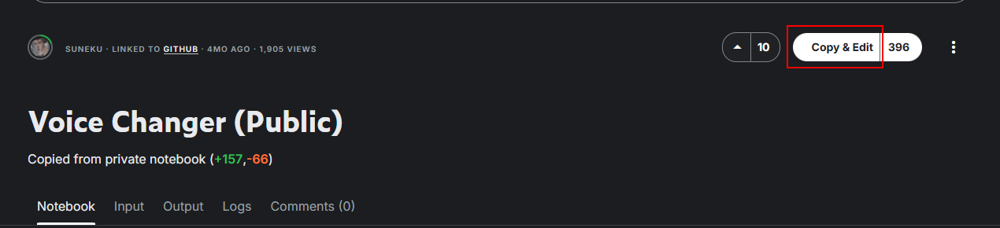
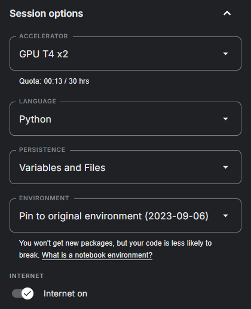
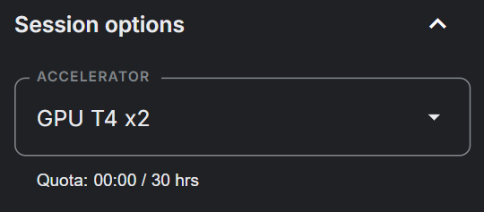
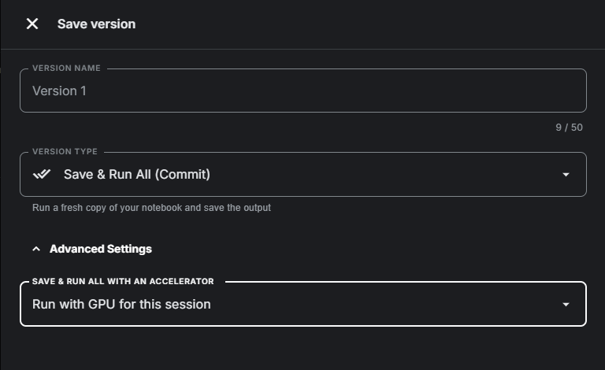
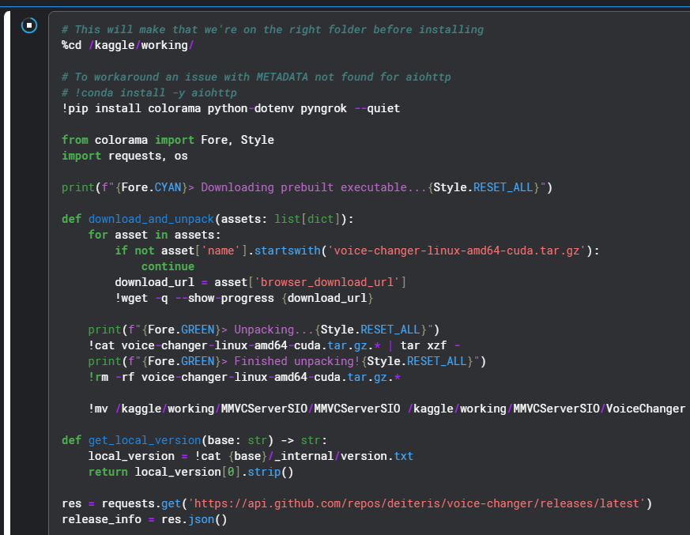
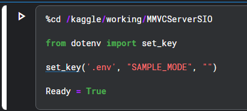
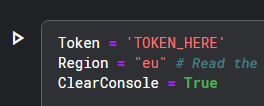

#
Deiteris' W Okada Fork Kaggle
Last update: August 1, 2025

#
#
Introduction
Kaggle is a cloud platform for using AI apps, powered by virtual machines with powerful GPU's.
It's a good cloud alternative for W-Okada for those who don't have good enough GPUs.
You only get 30 free GPU hours per week.
#
#
Create an Account
#
#
1. Set up account.
Start by making an account here.

- Verify your acount with a phone number so you can turn on the "internet" option.
#
#
Clone and Notebook Setup
#
#
2. Clone Notebook
Go to the realtime voice changer notebook and click "Copy and Edit"
Under "Session options" in the sidebar turn on "internet". Make sure persistance is on for both files and varibles.
Turn on T4 X2 GPUs in accelerator.

d: (Optional) Turn on headless mode so you can run so you can run the GPU on all sessions and save your progress. Go to the top right and click "Save version" then open the advanced dropdown.

Warning
Your runtime will continue draining when you're not running any cells with this option on.
#
#
Installation
#
#
3. Installation Cells
Starting from the top run the first cells, with the first being:

a2. When it's done, which may take a couple of minutes, it will output Done! Proceed with the next steps.
Run the third cell which is:

#
#
Ngrok & Sever Setup
#
#
4. Ngrok Setup
Scroll down to the last cell and you should see a section where you put your ngrok token. If you dont have a ngrok acount sign up here.
a2. Once you have an acount you can authenticate your ngrok tunnel agent here: https://dashboard.ngrok.com/get-started/your-authtoken
put the Ngrok token in the last cell like so:
Once the Ngrok token is there run the cell and let it download what it needs then you can click on the ngork link and start using W-Okada.
Warning
There is a monthly limit rate with Ngrok so dont be supprised if training is suddenly interrupted.
- (Optional) Directly under where you put your ngrok token there is region selection. You can change it to any of these servers to get less latency:
- us -> United States (Ohio)
- ap -> Asia/Pacific (Singapore)
- au -> Australia (Sydney)
- eu -> Europe (Frankfurt)
- in -> India (Mumbai)
- jp -> Japan (Tokyo)
- sa -> South America (Sao Paulo)
- From here it's pretty much the same as using local W-Okada.
#
Virtual Audio Cable
#
A Virtual Audio Cable (VAC) is what you need to use the realtime voice changer on Discord & Games.
- A VAC (Virtual Audio Cable) makes a fake audio device, used to re-route the audio of different programs.
- In Wokada Deiteris Fork context, it's used to get the output of Wokada Deiteris Fork as the input in other programs such as Discord.
For Windows
Download this: VAC Lite (Virtual-Audio-Cable by Muzychenko). (Be sure to not use any toher vac like VB Audio Cable.)
Run
setup64, not 64a, after extracting the zip to a new folderAfter installing the VAC Lite, it changes your default audio system. Click Yes when it asks you to open the audio device settings (or press WIN+R, type "mmsys.cpl" if you closed it already), and change your Recording and Playback devices back to your usual devices. Same for communications device aswell (right click -> set as default communication device)
For Mac
Download either: Blackhole Virtual Audio Cable or VB-Audio
For Linux
For Debian / Ubuntu-based Systems (Ubuntu, Mint, Pop!_OS), run in the terminal:
sudo apt-get update && sudo apt-get install -y portaudio19-devFor Fedora / RHEL-based Systems (CentOS, Rocky Linux), run in the terminal:
sudo yum install -y portaudioFor Arch / Arch-based Systems (Endeavour, Manjaro Linux), run in the terminal:
sudo pacman -Syu portaudio
#
Audio Setup
#
Discord & Games
On the realtime voice changer app wokada, you select:
- Input: Your microphone
- Output: Virtual Cable
- Monitor (if you wish to hear the realtime voice changer on your headphones aswell): Your headphones
On discord and games, you select:
- Input: Virtual Cable
- Output: Your headphones